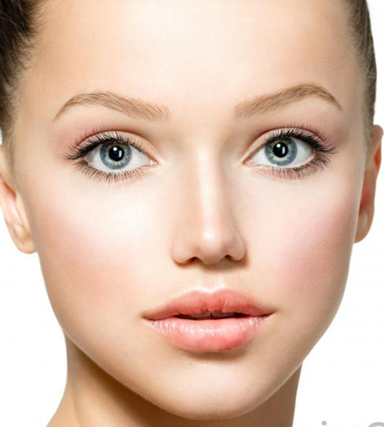
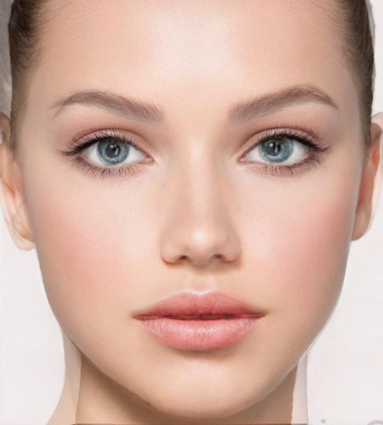
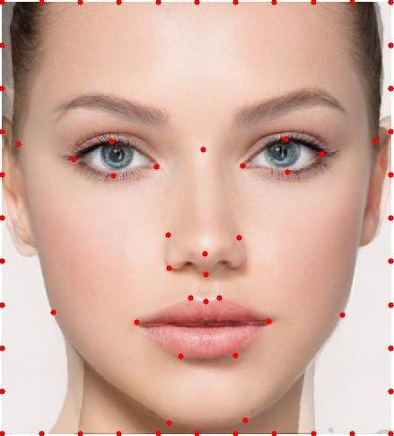
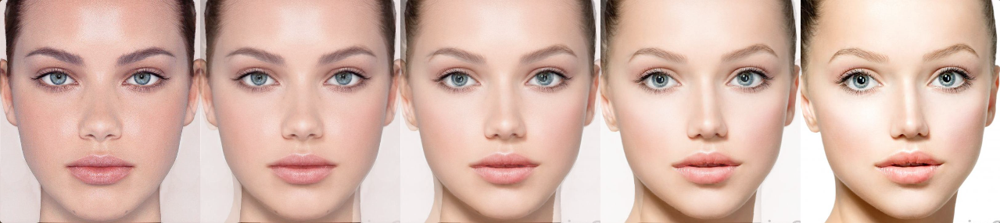

The Mid Face
The shape of a face can be defined by set of keypoints on eyes, mouth and nose etc. We can split a face into smaller subset by meshing, i.e. forming a triangle of, these key points. To get a mid face, we calculate the mid shape and morph the two inputs into this mid shape. Combine the pixels by taking 50% opacity from each piture.
 |
 |
| Input Face 1 | Input Face 2 |
|  |  |
| The mid face | The key points of mid shape |
The Morph Sequence
We assign different shape warping factor and opacity factor to get a sequence of transition from one face to another.
The Resulting Squence

The transition of face features is smooth but there are some noticeable halos at the edges of face and neck.
The "Mean Face"
Dataset retrieved from http://www2.imm.dtu.dk/~aam/datasets/datasets.html
To get a informative average face of a population, we calculate the mean shape and morph each face into this mean shape.
 |
 |
|
| Examples of Original Dataset | ||
| Original Faces morphed into average shape |
Overlap the morphed faces and we get the beautiful mean female face.
With the same method, we also get the mean male face of the data set
 |
||
| Examples of Original Dataset |
It' surprising to see the ending result is pretty aesthetically appealing. Mean face seems better with a bigger dataset. There're 7 images in female dataset and 33 images in male dataset.
Me and Mean
 |
|
| My Face | Average female face |
| Me in the average female shape | Average female face in my shape |
Caricature
By extrapolating the shape of my face away from the mean shape, I can exaggerate my facial features. And voila! A caricature of myself (Not appealing at all though).
Basically I morph the shape of my face into the newShape = myShape + (myShape - meanShape) * alpha
| alpha=0.2 | alpha=0.4 | alpha=0.6 | alpha=0.8 |
We can see that when alpha approaches 1.0, things gets messes up. Some part of my facial features become very triangular.
| alpha=1.0 | alpha=1.5 |
Change the gender
I morphed myself with the average male face in three different ways:
| Morph only the shape | Morph only the color | Morph both shape and color |
Apparently, morphing both the shape and color gives the best result.
End words:
There are a lot of little things that I need to deal with like annotate the key points and extracting annoatations from asf files. But when the results like the morphing video and average face come out (after a long compile time), it's really amazing!